Download complete PDF · Coverage, findings and uncertainty notes · Ratio data
Four curves, merged / @0 / @1 columns. Middle row: common fresh-OFF reference. Bottom row: historical geometric/hard and fresh ISR on/off. Historical and fresh shower steering differ. Expand a plot to inspect it.
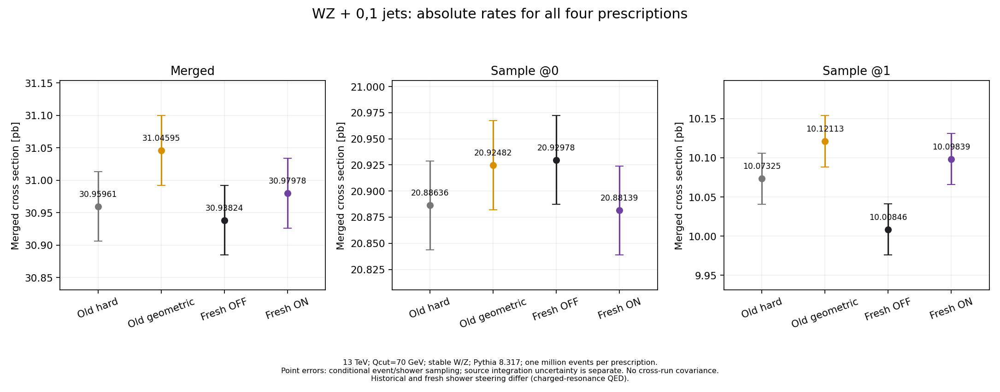
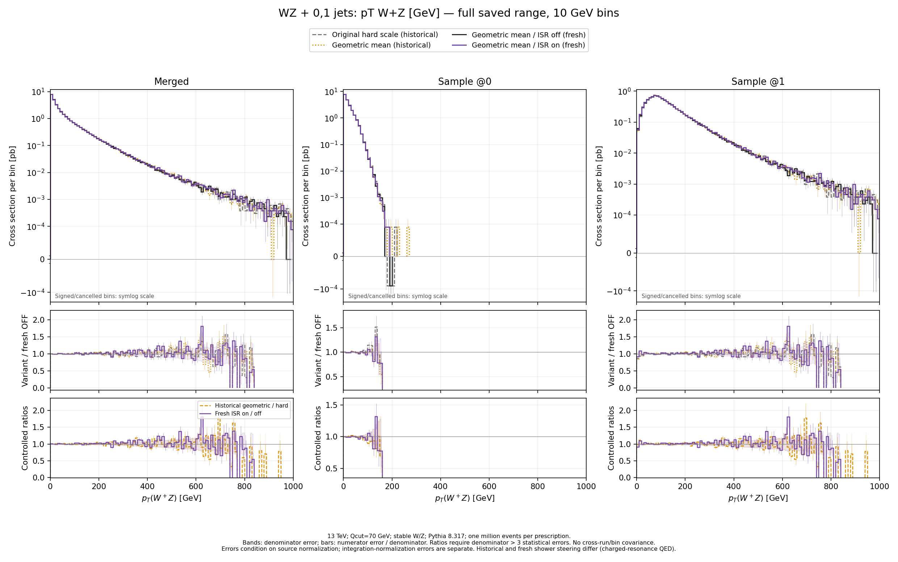
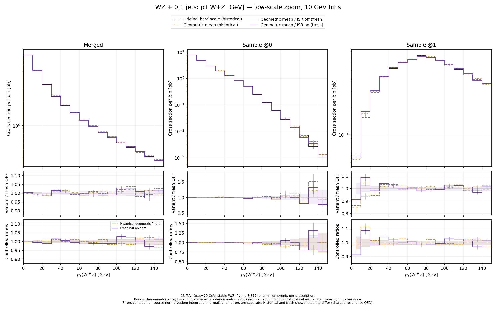
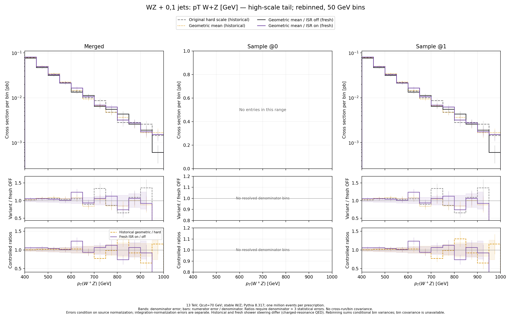
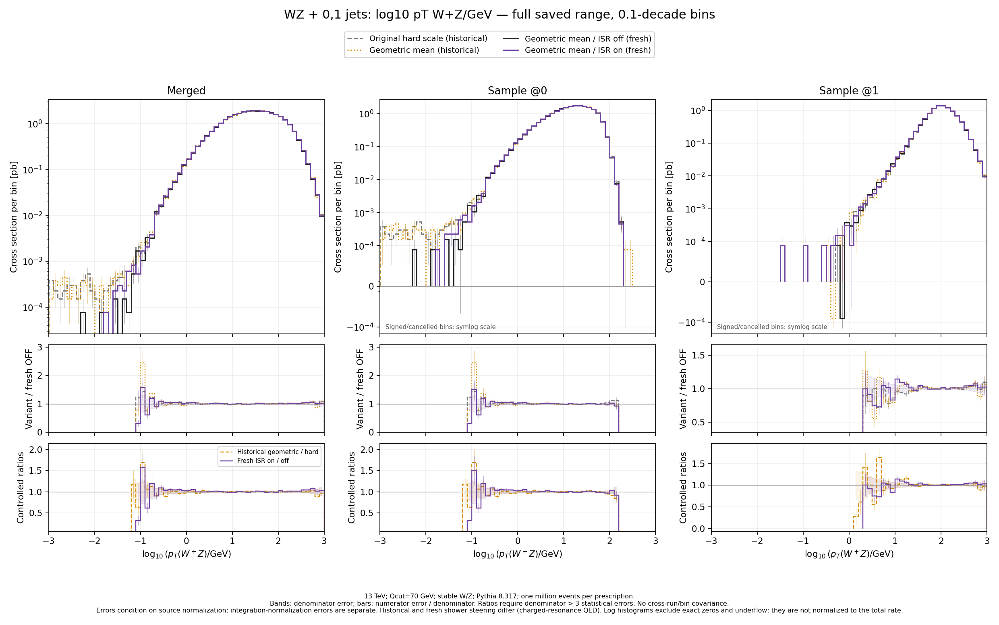
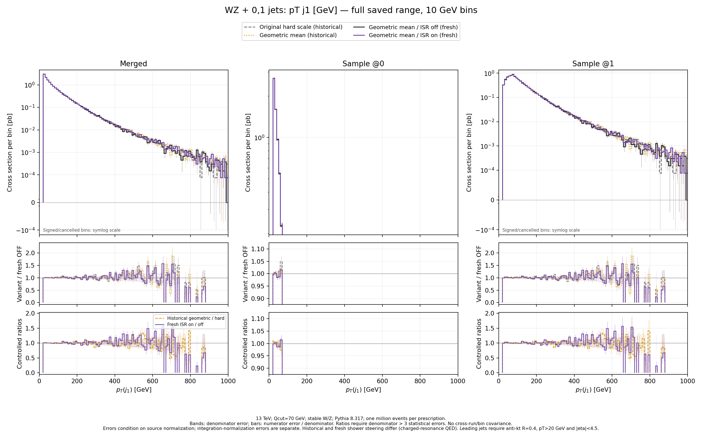
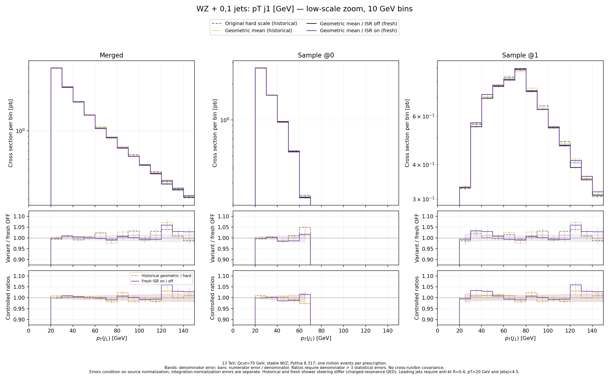
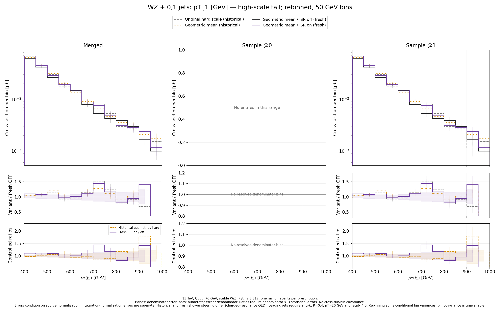
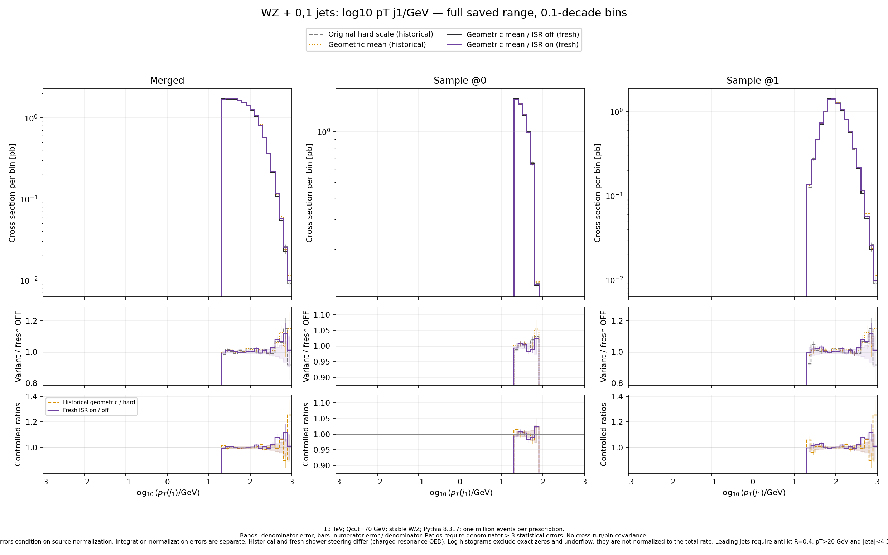
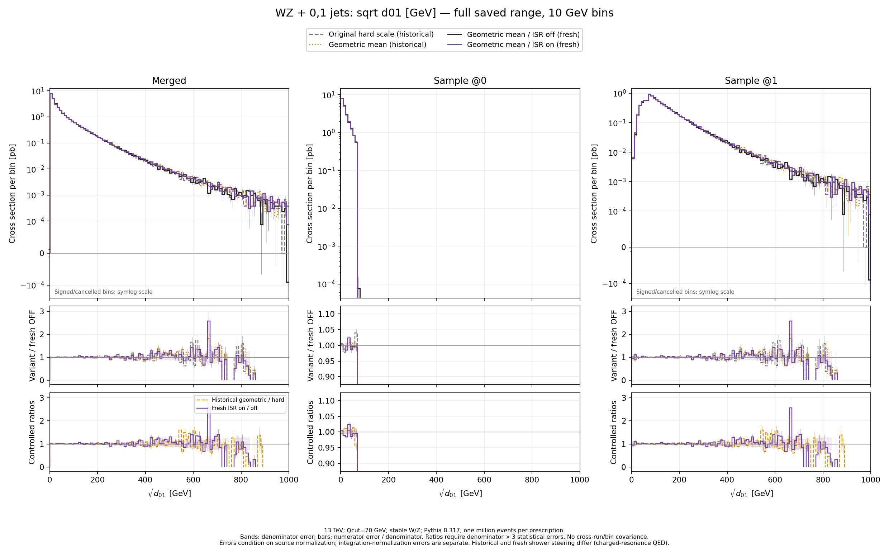
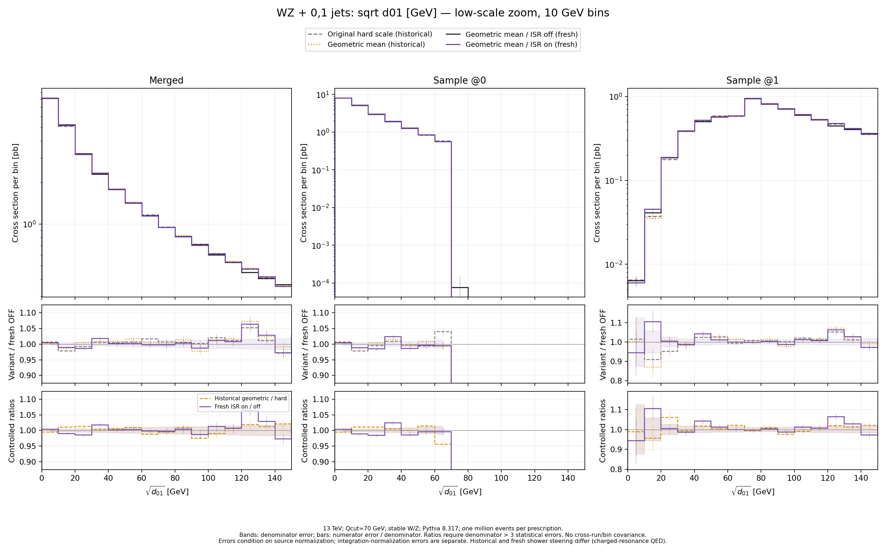
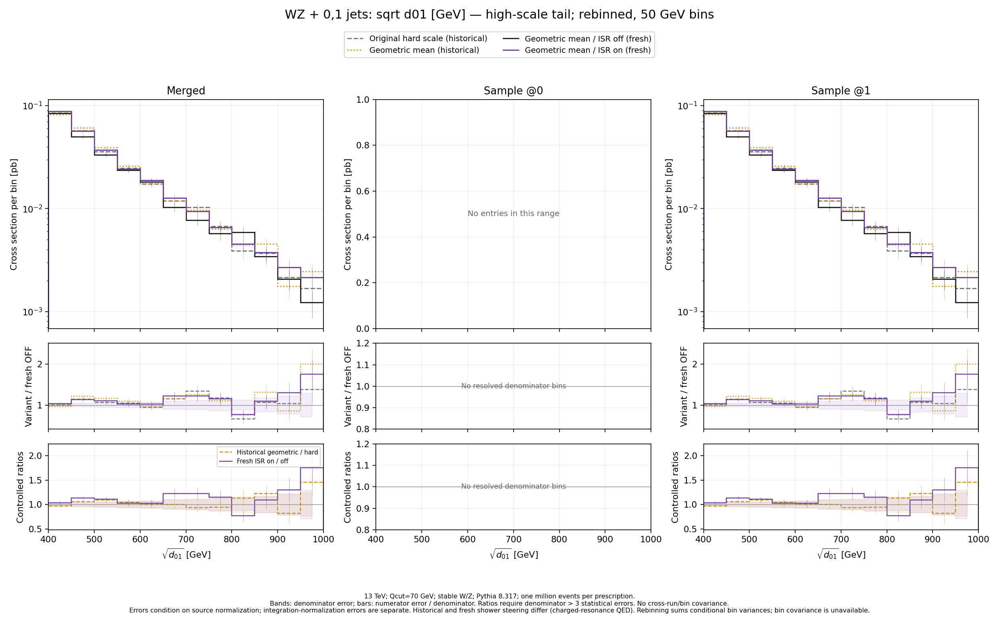
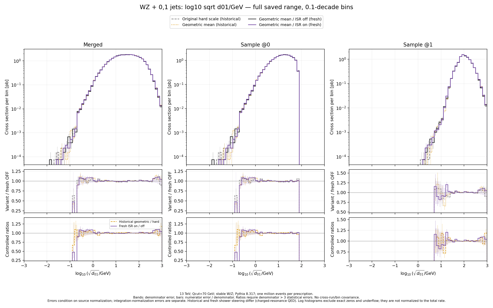
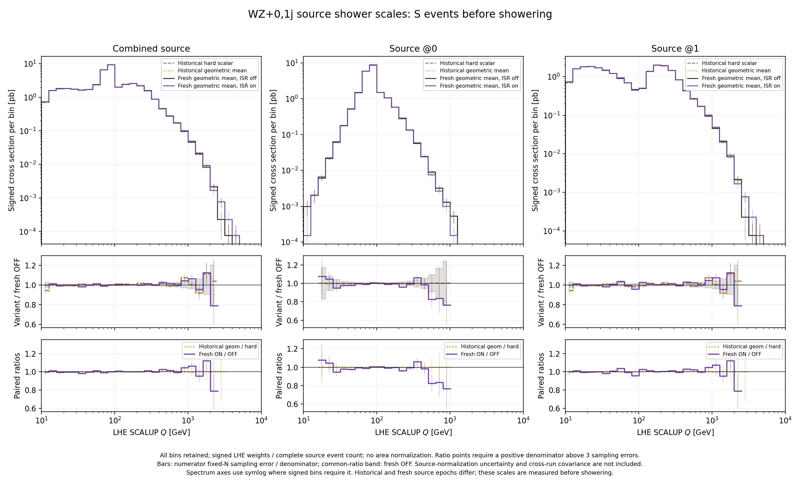
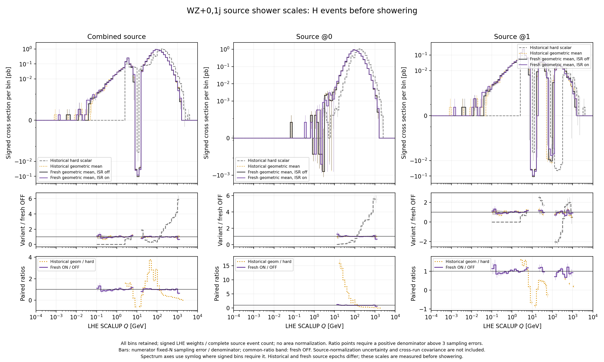